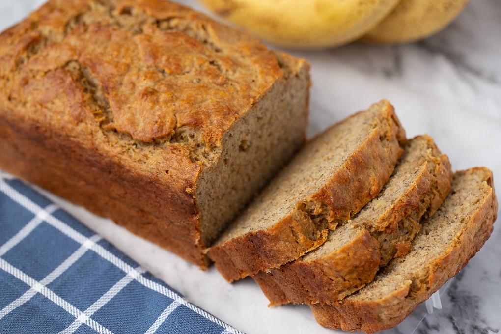

Banana Bread

Description
Moist and delicious. Once you make it you will always be asked for more banana bread. Just try it!
Ingredients
- 1 cup mashed bananas
- 1 cup sour cream
- 1/4 cup margarine
- 1 1/3 cups white sugar
- 1 large egg
- 1 teaspoon vanilla extract
- 2 cups all-purpose flour
- 1 teaspoon baking soda
- 1 teaspoon baking powder
- 1/4 teaspoon salt
Steps
- Preheat oven to 350 degrees F (175 degrees C). Grease and flour one 9x13 inch pan, or two 7x3 inch loaf pans.
- Combine banana and sour cream. Set aside. In a large bowl, cream together the margarine and sugar until smooth. Beat in the eggs one at a time, then stir in the vanilla and banana mixture. Combine the flour, baking soda, baking powder and salt; stir into the banana mixture. Spread the batter evenly into the prepared pan or pans.
- Bake for 50 minutes in the preheated oven, or until a toothpick inserted into the center of the bread comes out clean.